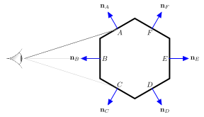
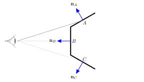

Backface culling
Contents
Backface culling#
The simplest hidden surface determination method is backface culling which, as the name suggests, we remove all polygons that have a normal vector facing away from the viewer, and therefore considered back facing. In doing this, when we only render the front facing polygons, objects appear solid.
Consider the diagram in Fig. 77 which shows a hexagonal object with face polygons \(A\) to \(F\) which have their normal vectors pointing away from the centre of the object (this is done when we define the object space). When viewed from the viewer position on the left polygons \(A\), \(B\) and \(C\) are front facing and polygons \(D\), \(E\) and \(F\) are back facing.

Fig. 77 All polygons#
Using backface culling if we only render the front facing polygons then from the point of view of the viewer the object is unchanged and appears solution (Fig. 78)

Fig. 78 Front facing polygons only#
To determine whether a polygon is front or back facing we can use the dot product. Consider Fig. 79 that shows a front facing polygon. The angle \(\theta\) between the polygon normal vector and a viewing vector from the viewer to the polygon is greater that \(\pi/2\). Alternatively a similar diagram in Fig. 80 that shows a back facing polygon where the angle between the normal vector and viewing vector is less than \(\pi/2\).
Recall that the geometric definition of the dot product is
and since \(\cos(\pi/2) = 0\) then a polygon is front facing if \(\mathbf{n} \cdot \mathbf{v} < 0\).
Definition 22 (Front facing polygons)
A polygon defined by a normal vector \(\mathbf{n}\) and point \(\mathbf{c}\) is front facing to the viewer if
Algorithm 3 (Backface culling)
Inputs A screen space defined by a homogeneous vertex matrix \(V\), a face matrix \(F\) and a viewing position \(\mathbf{p}\)
Outputs A face matrix containing the front facing polygons.
\(F_{front} \gets \emptyset\)
For each face in \(F\)
\(\mathbf{n} \gets (\mathbf{v}_2 - \mathbf{v}_1) \times (\mathbf{v}_3 - \mathbf{v}_2)\)
If \(\mathbf{n} \cdot (\mathbf{v}_1 - \mathbf{p}) < 0\)
Add face to \(F_{front}\)
Return \(F_{front}\)
Note
If the world space is aligned so that the viewer is looking down the \(z\)-axis, any polygon where the \(z\) value of the normal vector is positive is a front facing polygon.
Example 35
A tetrahedron object is defined by the following homogeneous screen space co-ordinates and face matrix
The object is viewed looking down the \(z\)-axis from the viewing position at \((0, 0, 1)\). Determine which of the faces of the object are front facing.
Solution
Face 1 :
therefore face 1 is back facing.
Face 2:
therefore face 2 is front facing.
Face 3:
therefore face 3 is front facing.
Face 4:
therefore face 4 is back facing.
MATLAB code#
The MATLAB function front_polygons(V, F, p) defined below takes inputs of the vertex and face matrices \(V\) and \(F\) and the viewing position \(\mathbf{p}\) and returns a face matrix containing the front facing polygons.
function Ffront = backface_culling(V, F, p)
Ffront = [];
for i = 1 : size(F, 1)
n = cross(V(1:3,F(i,2)) - V(1:3,F(i,1)), V(1:3,F(i,3)) - V(1:3,F(i,2)));
if dot(n, V(1:3,F(i,1)) - p) < 0
Ffront = [Ffront ; F(i,:)];
end
end
end
The affect of applying backface culling to the screen space from Example 32 is shown in Fig. 81.

Fig. 81 The screen space from Example 32 plotted using only front facing polygons.#
Unfortunately using backface culling alone is not sufficient to remove hidden surfaces. This means that the church object which should be in the background and partially obscured by the house object in the foreground has been plotted over the top of the house object.